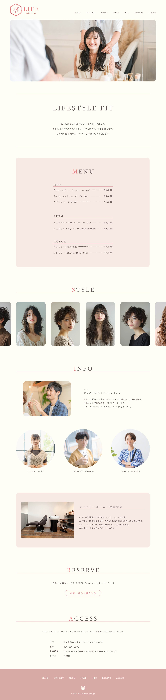

制作事例
LIFE hair design

担当範囲
デザイン
使用ツール
Illustrator / Photoshop
ペルソナ
20代〜50代の女性
20代〜50代の女性がターゲットである美容室のwebサイトをデザインしました。
ロゴとピンクをメインに使用することが決まっていたので、全体的に柔らかい雰囲気を感じられるように意識しました。
また、ターゲットの20代〜50代の女性の中でも、子育て中のママをメインターゲットとし、忙しい日常の中でもパッとみてわかりやすいということを意識しました。全体的に余白を多めにし、見やすさ＋落ち着いた雰囲気を感じられるようにしました。
写真や図形などの角を全て丸くし、柔らかさを出しました。コンテンツ名の下には直線を引き、柔らかさだけでなくスタイリッシュで大人な雰囲気も感じられるようにしました。
コンセプトの箇所とカテゴリ名は明朝体使い、女性らしさ、落ち着き感を感じるようにしました。そのほかは丸ゴシックを使用し、柔らかさがありながらも読みやすいようにしました。
